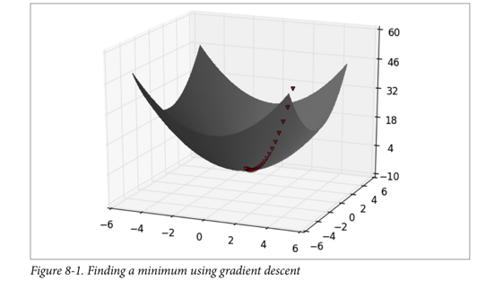

Introduction to Gradient Descent#
The Idea Behind Gradient Descent 梯度下降


如何找到最快下山的路？
假设此时山上的浓雾很大，下山的路无法确定;
假设你摔不死！
你只能利用自己周围的信息去找到下山的路径。
以你当前的位置为基准，寻找这个位置最陡峭的方向，从这个方向向下走。

Gradient is the vector of partial derivatives
One approach to maximizing a function is to
pick a random starting point,
compute the gradient,
take a small step in the direction of the gradient, and
repeat with a new staring point.
Gradient Descent#
以下内容同《第七章 神经网络与深度学习》

Let’s represent parameters as \(\Theta\), learning rate as \(\alpha\), and gradient as \(\bigtriangledown J(\Theta)\),


Let’s represent parameters as \(\Theta\), learning rate as \(\alpha\), and gradient as \(\bigtriangledown J(\Theta)\),
To the find the best model is an optimization problem
“minimizes the error of the model”
“maximizes the likelihood of the data.”
We’ll frequently need to maximize (or minimize) functions.
to find the input vector v that produces the largest (or smallest) possible value.
Mannual Gradient#
%matplotlib inline
import matplotlib.pyplot as plt
import numpy as np
import seaborn as sns
sns.set()
x_data = [1.0, 2.0, 3.0]
y_data = [2.0, 4.0, 6.0]
plt.plot(x_data, y_data, 'ro')
plt.ylabel('y')
plt.xlabel('x');
# our model for the forward pass
def forward(x):
return x * w
# Loss function
def loss(y_pred, y_val):
return (y_pred - y_val) ** 2
# List of weights/Mean square Error (Mse) for each input
w_list = []
mse_list = []
for w in np.arange(0.0, 4.1, 0.1):
# Print the weights and initialize the lost
#print("w=", w)
l_sum = 0
for x_val, y_val in zip(x_data, y_data):
# For each input and output, calculate y_hat
# Compute the total loss and add to the total error
y_pred = forward(x_val)
l = loss(y_pred, y_val)
l_sum += l
#print("\t", x_val, y_val, y_pred_val, l)
# Now compute the Mean squared error (mse) of each
# Aggregate the weight/mse from this run
#print("MSE=", l_sum / 3)
w_list.append(w)
mse_list.append(l_sum / 3)
# Plot it all
plt.plot(w_list, mse_list)
plt.ylabel('Loss')
plt.xlabel('w')
plt.show()
# compute gradient
def gradient(x, y): # d_loss/d_w
return 2 * x * (x * w - y)
# Training loop
for epoch in range(100):
for x_val, y_val in zip(x_data, y_data):
# Compute derivative w.r.t to the learned weights
# Update the weights
# Compute the loss and print progress
grad = gradient(x_val, y_val)
w = w - 0.01 * grad
#print("\tgrad: ", x_val, y_val, round(grad, 2))
y_pred = forward(x_val)
l = loss(y_pred, y_val)
print("Epoch:", epoch, "w=", round(w, 2), "loss=", round(l, 2), end='\r')
Epoch: 0 w= 3.48 loss= 19.68
Epoch: 1 w= 3.09 loss= 10.76
Epoch: 2 w= 2.81 loss= 5.88
Epoch: 3 w= 2.6 loss= 3.21
Epoch: 4 w= 2.44 loss= 1.76
Epoch: 5 w= 2.33 loss= 0.96
Epoch: 6 w= 2.24 loss= 0.52
Epoch: 7 w= 2.18 loss= 0.29
Epoch: 8 w= 2.13 loss= 0.16
Epoch: 9 w= 2.1 loss= 0.09
Epoch: 10 w= 2.07 loss= 0.05
Epoch: 11 w= 2.05 loss= 0.03
Epoch: 12 w= 2.04 loss= 0.01
Epoch: 13 w= 2.03 loss= 0.01
Epoch: 14 w= 2.02 loss= 0.0
Epoch: 15 w= 2.02 loss= 0.0
Epoch: 16 w= 2.01 loss= 0.0
Epoch: 17 w= 2.01 loss= 0.0
Epoch: 18 w= 2.01 loss= 0.0
Epoch: 19 w= 2.0 loss= 0.0
Epoch: 20 w= 2.0 loss= 0.0
Epoch: 21 w= 2.0 loss= 0.0
Epoch: 22 w= 2.0 loss= 0.0
Epoch: 23 w= 2.0 loss= 0.0
Epoch: 24 w= 2.0 loss= 0.0
Epoch: 25 w= 2.0 loss= 0.0
Epoch: 26 w= 2.0 loss= 0.0
Epoch: 27 w= 2.0 loss= 0.0
Epoch: 28 w= 2.0 loss= 0.0
Epoch: 29 w= 2.0 loss= 0.0
Epoch: 30 w= 2.0 loss= 0.0
Epoch: 31 w= 2.0 loss= 0.0
Epoch: 32 w= 2.0 loss= 0.0
Epoch: 33 w= 2.0 loss= 0.0
Epoch: 34 w= 2.0 loss= 0.0
Epoch: 35 w= 2.0 loss= 0.0
Epoch: 36 w= 2.0 loss= 0.0
Epoch: 37 w= 2.0 loss= 0.0
Epoch: 38 w= 2.0 loss= 0.0
Epoch: 39 w= 2.0 loss= 0.0
Epoch: 40 w= 2.0 loss= 0.0
Epoch: 41 w= 2.0 loss= 0.0
Epoch: 42 w= 2.0 loss= 0.0
Epoch: 43 w= 2.0 loss= 0.0
Epoch: 44 w= 2.0 loss= 0.0
Epoch: 45 w= 2.0 loss= 0.0
Epoch: 46 w= 2.0 loss= 0.0
Epoch: 47 w= 2.0 loss= 0.0
Epoch: 48 w= 2.0 loss= 0.0
Epoch: 49 w= 2.0 loss= 0.0
Epoch: 50 w= 2.0 loss= 0.0
Epoch: 51 w= 2.0 loss= 0.0
Epoch: 52 w= 2.0 loss= 0.0
Epoch: 53 w= 2.0 loss= 0.0
Epoch: 54 w= 2.0 loss= 0.0
Epoch: 55 w= 2.0 loss= 0.0
Epoch: 56 w= 2.0 loss= 0.0
Epoch: 57 w= 2.0 loss= 0.0
Epoch: 58 w= 2.0 loss= 0.0
Epoch: 59 w= 2.0 loss= 0.0
Epoch: 60 w= 2.0 loss= 0.0
Epoch: 61 w= 2.0 loss= 0.0
Epoch: 62 w= 2.0 loss= 0.0
Epoch: 63 w= 2.0 loss= 0.0
Epoch: 64 w= 2.0 loss= 0.0
Epoch: 65 w= 2.0 loss= 0.0
Epoch: 66 w= 2.0 loss= 0.0
Epoch: 67 w= 2.0 loss= 0.0
Epoch: 68 w= 2.0 loss= 0.0
Epoch: 69 w= 2.0 loss= 0.0
Epoch: 70 w= 2.0 loss= 0.0
Epoch: 71 w= 2.0 loss= 0.0
Epoch: 72 w= 2.0 loss= 0.0
Epoch: 73 w= 2.0 loss= 0.0
Epoch: 74 w= 2.0 loss= 0.0
Epoch: 75 w= 2.0 loss= 0.0
Epoch: 76 w= 2.0 loss= 0.0
Epoch: 77 w= 2.0 loss= 0.0
Epoch: 78 w= 2.0 loss= 0.0
Epoch: 79 w= 2.0 loss= 0.0
Epoch: 80 w= 2.0 loss= 0.0
Epoch: 81 w= 2.0 loss= 0.0
Epoch: 82 w= 2.0 loss= 0.0
Epoch: 83 w= 2.0 loss= 0.0
Epoch: 84 w= 2.0 loss= 0.0
Epoch: 85 w= 2.0 loss= 0.0
Epoch: 86 w= 2.0 loss= 0.0
Epoch: 87 w= 2.0 loss= 0.0
Epoch: 88 w= 2.0 loss= 0.0
Epoch: 89 w= 2.0 loss= 0.0
Epoch: 90 w= 2.0 loss= 0.0
Epoch: 91 w= 2.0 loss= 0.0
Epoch: 92 w= 2.0 loss= 0.0
Epoch: 93 w= 2.0 loss= 0.0
Epoch: 94 w= 2.0 loss= 0.0
Epoch: 95 w= 2.0 loss= 0.0
Epoch: 96 w= 2.0 loss= 0.0
Epoch: 97 w= 2.0 loss= 0.0
Epoch: 98 w= 2.0 loss= 0.0
Epoch: 99 w= 2.0 loss= 0.0
Mathematics behind Gradient Descent#
A simple mathematical intuition behind one of the commonly used optimisation algorithms in Machine Learning.
https://www.douban.com/note/713353797/
The cost or loss function:

Parameters with small changes: $\( m_1 = m_0 - \delta m, b_1 = b_0 - \delta b\)$
The cost function J is a function of m and b:
Let’s fit the data with linear regression:
Since \(X, b, Y\) are constant:
Since \(X, m, Y\) are constant:
Thus:
Let’s get rid of the constant 2 and multiplying the learning rate \(\alpha\), who determines how large a step to take:
Since \( m_1 = m_0 - \delta m, b_1 = b_0 - \delta b\):
Notice that the slope b can be viewed as the beta value for X = 1. Thus, the above two equations are in essence the same.
Let’s represent parameters as \(\Theta\), learning rate as \(\alpha\), and gradient as \(\bigtriangledown J(\Theta)\), we have:
Hence,to solve for the gradient, we iterate through our data points using our new \(m\) and \(b\) values and compute the partial derivatives.
This new gradient tells us
the slope of our cost function at our current position
the direction we should move to update our parameters.
The size of our update is controlled by the learning rate.
import numpy as np
# Size of the points dataset.
m = 20
# Points x-coordinate and dummy value (x0, x1).
X0 = np.ones((m, 1))
X1 = np.arange(1, m+1).reshape(m, 1)
X = np.hstack((X0, X1))
# Points y-coordinate
y = np.array([3, 4, 5, 5, 2, 4, 7, 8, 11, 8, 12,
11, 13, 13, 16, 17, 18, 17, 19, 21]).reshape(m, 1)
# The Learning Rate alpha.
alpha = 0.01
def error_function(theta, X, y):
'''Error function J definition.'''
diff = np.dot(X, theta) - y
return (1./2*m) * np.dot(np.transpose(diff), diff)
def gradient_function(theta, X, y):
'''Gradient of the function J definition.'''
diff = np.dot(X, theta) - y
return (1./m) * np.dot(np.transpose(X), diff)
def gradient_descent(X, y, alpha):
'''Perform gradient descent.'''
theta = np.array([1, 1]).reshape(2, 1)
gradient = gradient_function(theta, X, y)
while not np.all(np.absolute(gradient) <= 1e-5):
theta = theta - alpha * gradient
gradient = gradient_function(theta, X, y)
return theta
# source：https://www.jianshu.com/p/c7e642877b0e
optimal = gradient_descent(X, y, alpha)
print('Optimal parameters Theta:', optimal[0][0], optimal[1][0])
print('Error function:', error_function(optimal, X, y)[0,0])
Optimal parameters Theta: 0.5158328581734093 0.9699216324486175
Error function: 405.98496249324046

Estimating the Gradient#
If f is a function of one variable, its derivative at a point x measures how f(x) changes when we make a very small change to x.
It is defined as the limit of the difference quotients:
差商（difference quotient）就是因变量的改变量与自变量的改变量两者相除的商。
def difference_quotient(f, x, h):
return (f(x + h) - f(x)) / h
For many functions it’s easy to exactly calculate derivatives.
For example, the square function:
def square(x):
return x * x
has the derivative:
def derivative(x):
return 2 * x
def square(x):
return x * x
def derivative(x):
return 2 * x
derivative_estimate = lambda x: difference_quotient(square, x, h=0.00001)
def sum_of_squares(v):
"""computes the sum of squared elements in v"""
return sum(v_i ** 2 for v_i in v)
# plot to show they're basically the same
import matplotlib.pyplot as plt
x = range(-10,10)
plt.plot(x, list(map(derivative, x)), 'rx') # red x
plt.plot(x, list(map(derivative_estimate, x)), 'b+') # blue +
plt.show()
When f is a function of many variables, it has multiple partial derivatives.
def partial_difference_quotient(f, v, i, h):
# add h to just the i-th element of v
w = [v_j + (h if j == i else 0)
for j, v_j in enumerate(v)]
return (f(w) - f(v)) / h
def estimate_gradient(f, v, h=0.00001):
return [partial_difference_quotient(f, v, i, h)
for i, _ in enumerate(v)]
Using the Gradient#
def step(v, direction, step_size):
"""move step_size in the direction from v"""
return [v_i + step_size * direction_i
for v_i, direction_i in zip(v, direction)]
def sum_of_squares_gradient(v):
return [2 * v_i for v_i in v]
from collections import Counter
from linear_algebra import distance, vector_subtract, scalar_multiply
from functools import reduce
import math, random
print("using the gradient")
# generate 3 numbers
v = [random.randint(-10,10) for i in range(3)]
print(v)
tolerance = 0.0000001
n = 0
while True:
gradient = sum_of_squares_gradient(v) # compute the gradient at v
if n%50 ==0:
print(v, sum_of_squares(v))
next_v = step(v, gradient, -0.01) # take a negative gradient step
if distance(next_v, v) < tolerance: # stop if we're converging
break
v = next_v # continue if we're not
n += 1
print("minimum v", v)
print("minimum value", sum_of_squares(v))
using the gradient
[-4, 10, 6]
[-4, 10, 6] 152
[-1.4566787203484681, 3.641696800871171, 2.1850180805227026] 20.15817249600249
[-0.5304782235790126, 1.3261955589475318, 0.7957173353685193] 2.6733678840696777
[-0.19318408497395115, 0.482960212434878, 0.28977612746092685] 0.35454086152861664
[-0.07035178642288623, 0.17587946605721566, 0.10552767963432938] 0.04701905160246833
[-0.025619987555179666, 0.0640499688879492, 0.03842998133276951] 0.006235645742111834
[-0.0093300226718057, 0.023325056679514268, 0.013995034007708552] 0.0008269685690358806
[-0.0033977113715970304, 0.008494278428992584, 0.005096567057395551] 0.00010967220436445803
[-0.0012373434632228497, 0.003093358658057131, 0.0018560151948342769] 1.4544679036813049e-05
[-0.0004506029731597509, 0.0011265074328993788, 0.0006759044597396269] 1.9289088744938724e-06
[-0.00016409594058189027, 0.00041023985145472635, 0.00024614391087283554] 2.558110382968256e-07
[-5.975876618530154e-05, 0.00014939691546325416, 8.963814927795238e-05] 3.3925546291900725e-08
[-2.1762330764102098e-05, 5.440582691025532e-05, 3.264349614615315e-05] 4.499190882718763e-09
[-7.925181032313087e-06, 1.9812952580782747e-05, 1.1887771548469638e-05] 5.96680696751885e-10
[-2.8861106411699463e-06, 7.215276602924873e-06, 4.32916596175492e-06] 7.913152901420692e-11
minimum v [-1.6064572436336709e-06, 4.0161431090841815e-06, 2.409685865450507e-06]
minimum value 2.4516696318419405e-11
Choosing the Right Step Size#
Although the rationale for moving against the gradient is clear,
how far to move is not.
Indeed, choosing the right step size is more of an art than a science.
Methods:
Using a fixed step size
Gradually shrinking the step size over time
At each step, choosing the step size that minimizes the value of the objective function
step_sizes = [100, 10, 1, 0.1, 0.01, 0.001, 0.0001, 0.00001]
It is possible that certain step sizes will result in invalid inputs for our function.
So we’ll need to create a “safe apply” function
returns infinity for invalid inputs:
which should never be the minimum of anything
def safe(f):
"""define a new function that wraps f and return it"""
def safe_f(*args, **kwargs):
try:
return f(*args, **kwargs)
except:
return float('inf') # this means "infinity" in Python
return safe_f
Putting It All Together#
target_fn that we want to minimize
gradient_fn.
For example, the target_fn could represent the errors in a model as a function of its parameters,
To choose a starting value for the parameters theta_0.
def minimize_batch(target_fn, gradient_fn, theta_0, tolerance=0.000001):
"""use gradient descent to find theta that minimizes target function"""
step_sizes = [100, 10, 1, 0.1, 0.01, 0.001, 0.0001, 0.00001]
theta = theta_0 # set theta to initial value
target_fn = safe(target_fn) # safe version of target_fn
value = target_fn(theta) # value we're minimizing
while True:
gradient = gradient_fn(theta)
next_thetas = [step(theta, gradient, -step_size)
for step_size in step_sizes]
# choose the one that minimizes the error function
next_theta = min(next_thetas, key=target_fn)
next_value = target_fn(next_theta)
# stop if we're "converging"
if abs(value - next_value) < tolerance:
return theta
else:
theta, value = next_theta, next_value
# minimize_batch"
v = [random.randint(-10,10) for i in range(3)]
v = minimize_batch(sum_of_squares, sum_of_squares_gradient, v)
print("minimum v", v)
print("minimum value", sum_of_squares(v))
minimum v [0.0009304595970494407, -0.001196305196206424, -0.00026584559915698326]
minimum value 2.367575066803034e-06
Sometimes we’ll instead want to maximize a function, which we can do by minimizing its negative
def negate(f):
"""return a function that for any input x returns -f(x)"""
return lambda *args, **kwargs: -f(*args, **kwargs)
def negate_all(f):
"""the same when f returns a list of numbers"""
return lambda *args, **kwargs: [-y for y in f(*args, **kwargs)]
def maximize_batch(target_fn, gradient_fn, theta_0, tolerance=0.000001):
return minimize_batch(negate(target_fn),
negate_all(gradient_fn),
theta_0,
tolerance)
Using the batch approach, each gradient step requires us to make a prediction and compute the gradient for the whole data set, which makes each step take a long time.
Error functions are additive
The predictive error on the whole data set is simply the sum of the predictive errors for each data point.
When this is the case, we can instead apply a technique called stochastic gradient descent
which computes the gradient (and takes a step) for only one point at a time.
It cycles over our data repeatedly until it reaches a stopping point.
Stochastic Gradient Descent#
During each cycle, we’ll want to iterate through our data in a random order:
def in_random_order(data):
"""generator that returns the elements of data in random order"""
indexes = [i for i, _ in enumerate(data)] # create a list of indexes
random.shuffle(indexes) # shuffle them
for i in indexes: # return the data in that order
yield data[i]
This approach avoids circling around near a minimum forever
whenever we stop getting improvements we’ll decrease the step size and eventually quit.
def minimize_stochastic(target_fn, gradient_fn, x, y, theta_0, alpha_0=0.01):
data = list(zip(x, y))
theta = theta_0 # initial guess
alpha = alpha_0 # initial step size
min_theta, min_value = None, float("inf") # the minimum so far
iterations_with_no_improvement = 0
# if we ever go 100 iterations with no improvement, stop
while iterations_with_no_improvement < 100:
value = sum( target_fn(x_i, y_i, theta) for x_i, y_i in data )
if value < min_value:
# if we've found a new minimum, remember it
# and go back to the original step size
min_theta, min_value = theta, value
iterations_with_no_improvement = 0
alpha = alpha_0
else:
# otherwise we're not improving, so try shrinking the step size
iterations_with_no_improvement += 1
alpha *= 0.9
# and take a gradient step for each of the data points
for x_i, y_i in in_random_order(data):
gradient_i = gradient_fn(x_i, y_i, theta)
theta = vector_subtract(theta, scalar_multiply(alpha, gradient_i))
return min_theta
def maximize_stochastic(target_fn, gradient_fn, x, y, theta_0, alpha_0=0.01):
return minimize_stochastic(negate(target_fn),
negate_all(gradient_fn),
x, y, theta_0, alpha_0)
print("using minimize_stochastic_batch")
x = list(range(101))
y = [3*x_i + random.randint(-10, 20) for x_i in x]
theta_0 = random.randint(-10,10)
v = minimize_stochastic(sum_of_squares, sum_of_squares_gradient, x, y, theta_0)
print("minimum v", v)
print("minimum value", sum_of_squares(v))
Scikit-learn has a Stochastic Gradient Descent module http://scikit-learn.org/stable/modules/sgd.html